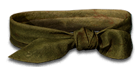
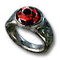
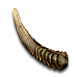
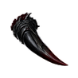
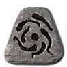
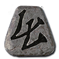
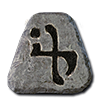
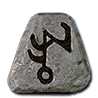
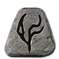
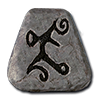

Check the base and socket count, then put your runes in order.
New slots for sockets




Ring
0 socketGems, jewels and runesNo runewordsThese are type limits. A base can hold fewer sockets. Gloves and boots need item level 41+ to hold three.
Will it take the runeword?
- BaseNormal or superior, and one of the types listed by the runeword.
- SocketsExactly one for each rune. Empty sockets, no extras.
- OrderInsert the runes in the displayed order.
Spellbind
Gloves · 3 sockets · required level 55
+1 to All Skills · +20% Faster Cast Rate · All Resistances +20 · +10% to Fire Skill Damage
View Spellbind →Add or clear sockets
Add sockets

Horn of Delving+Unsocketed item→ Random sockets, up to the item’s capThe item stays; the Horn is consumed.
Recover socketables

Claw of Prising+Socketed item→ Socketables returned · item becomes Gutted ScrapThe original equipment cannot be recovered.
Empty the sockets

Hel Rune+Socketed item + Scroll of Town Portal→ The item stays, with empty socketsThe runes, gems and jewels are destroyed.
Corrupted equipment refuses socket changes.
Plan a Cube recipe →Runewords for the new slots
Gloves
18 runewords · by sockets and required level
- Humility2 sockets
 Nef
Nef IthLevel 15
IthLevel 15 - Flurry2 sockets
 TalNefLevel 17
TalNefLevel 17 - Thirst2 sockets
 EthTalLevel 17
EthTalLevel 17 - Windfall2 socketsIth
 OrtLevel 21
OrtLevel 21 - Hunger2 socketsRal

ThulLevel 23 - Sting2 sockets
 Amn
Amn SolLevel 27
SolLevel 27 - Outrider2 sockets
 VotVotLevel 47
VotVotLevel 47 - Hail3 socketsTalOrt

FalLevel 41 - Long Vigil3 sockets
 ShaelFalThulLevel 41
ShaelFalThulLevel 41 - Frailty3 socketsAmnShael
 LemLevel 43
LemLevel 43 - Transfix3 sockets
 KoOrt
KoOrt PulLevel 45
PulLevel 45 - Confluence3 socketsRalOrt
 UmLevel 47
UmLevel 47 - Deadeye3 socketsVotOrt
 LumLevel 47
LumLevel 47 - Bareknuckle3 sockets
 MyrShaelUmLevel 49
MyrShaelUmLevel 49 - Retinue3 sockets
 Dol
Dol Tir
Tir
MalLevel 49 - Deluge3 socketsLem

Ist GulLevel 53
GulLevel 53 - Spellbind3 sockets
 XethRalLumLevel 55
XethRalLumLevel 55 - Worldbreaker3 socketsMyr
 Jah
Jah BerLevel 65
BerLevel 65
Boots
16 runewords · by sockets and required level
- Morning2 socketsNefEthLevel 15
- Wonder2 socketsTirIthLevel 15
- Daylight2 socketsTirOrtLevel 21
- Still Water2 socketsThulAmnLevel 25
- Cortege of Bones2 sockets
 El
El IoLevel 35
IoLevel 35 - Cortege of Briars2 sockets

EldIoLevel 35 - Cortege of Clay2 socketsTirIoLevel 35
- Cortege of Horns2 socketsIthIoLevel 35
- Outrider2 socketsVotVotLevel 47
- Smolder3 socketsSolThulLemLevel 43
- Feint3 socketsEldKoPulLevel 45
- Crosswind3 socketsShaelUmFalLevel 47
- Fastness3 socketsRalUmMalLevel 49
- Warpath3 socketsMyrUmLumLevel 49
- Wayfarer3 socketsXethOrtRalLevel 55
- Exodus3 socketsVotBerJahLevel 65
Belt
12 runewords · by sockets and required level
- Patience2 socketsElTirLevel 13
- Tithe2 socketsEldEthLevel 15
- Flurry2 socketsTalNefLevel 17
- Time2 socketsTalThulLevel 23
- Praise2 socketsRalAmnLevel 25
- Mainstay2 socketsSolLemLevel 43
- Rankle2 socketsFalPulLevel 45
- Outrider2 socketsVotVotLevel 47
- Sagacity2 socketsLumUmLevel 47
- Ironbound2 socketsMyrUmLevel 49
- Starfall2 socketsXethLumLevel 55
- Kingmaker2 socketsVotJahLevel 65